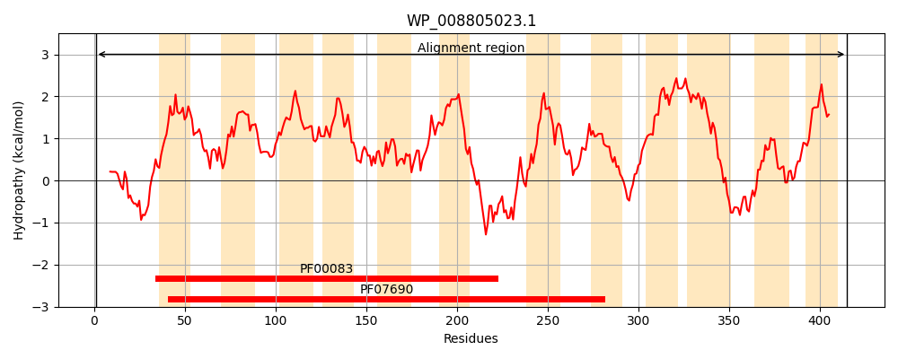
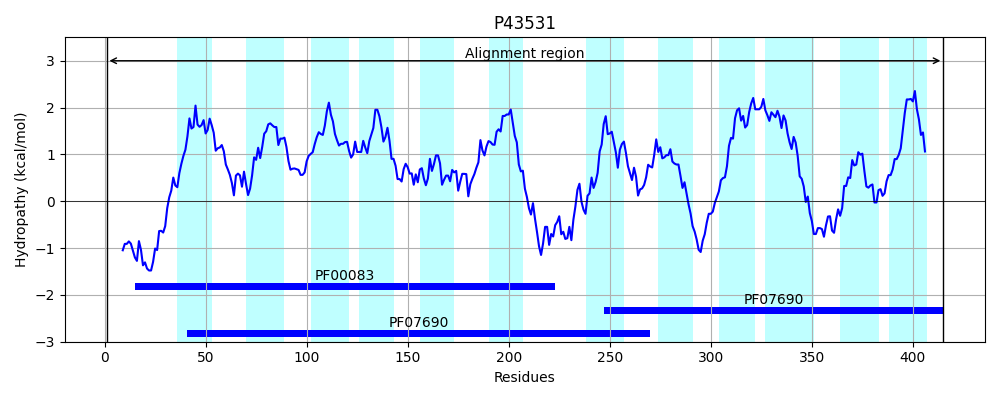
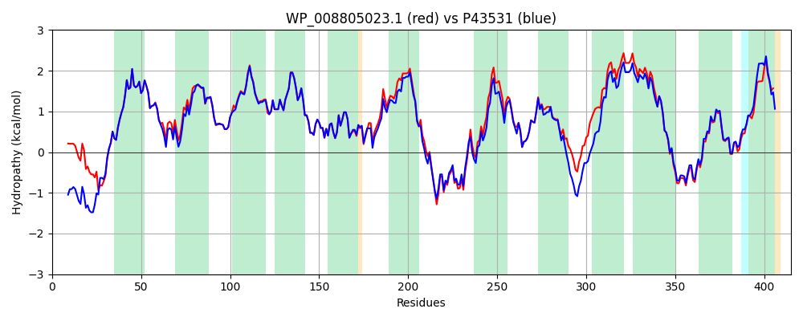

Hit Accession: P43531
Hit TCID: 2.A.1.36.1
Hit Description: gnl|BL_ORD_ID|10524 gnl|TC-DB|P43531|2.A.1.36.1 Hypothetical transport protein ynfM - Escherichia coli.
Mach Len: 415
e:0.000000
Query TMS Count : 12
Hit TMS Count: 12
TMS-Overlap Score: 11.500000
Predicted Substrates:CHEBI:383703;3,6-diamino-10-methylacridinium chloride, CHEBI:22599;arabinose
BLAST Alignment:
Score: 1848 , Bit scores: 716 bits, E-value: 0.0e+00, Alignment length: 415, Percentage identity: 86
Query: 1 MSRTTTVDTVPAGEVSVAGASRPDQFIKRGTPQFMRVTLALFSAGLATFALLYCVQPILPVLSNEFGVSPASSSISLSISTAMLAVGLLFTGPLSDAIGRKPVMVTALLLAACCSLLSTMMTSWHGILIMRALIGLSLSGVAAVGMTYLSEEIHPSFVAFSMGLYISGNSIGGMSGRLLTGVFTDFFGWRVALAVISGFALAAAIMFWRILPESRHFRSTSLRPKNLLINFRLHWRDRGLPLLFVEGFLLMGAFVTLFNYIGYRLMMSPWSLSQAVVGLLSVAYLTGTWSSPKAGAMTVRFGRGPVMLGFTAVMLCGLLLTLFSSLWLIFIGMLLFSAGFFAAHSVASSWIGPRARRARGQASSLYLFSYYLGSSLAGTLGGVFWHHYGWNGVGGFIALLLLAALLTGTCLHQRL 415
MSRTTTVD PA + S+P+QFIKRGTPQFMRVTLALFSAGLATFALLYCVQPILPVLS EFG++PA+SSISLSISTAMLA+GLLFTGPLSDAIGRKPVMVTALLLA+ C+LLSTMMTSWHGILIMRALIGLSLSGVAAVGMTYLSEEIHPSFVAFSMGLYISGNSIGGMSGRL++GVFTDFF WR+ALA I FALA+A+MFW+ILPESRHFR TSLRPK L INFRLHWRDRGLPLLF EGFLLMG+FVTLFNYIGYRLM+SPW +SQAVVGLLS+AYLTGTWSSPKAG MT R+GRGPVML T VML GLL+TLFSSLWLIF GMLLFSAGFFAAHSVASSWIGPRA+RA+GQASSLYLFSYYLGSS+AGTLGGVFWH+YGWNGVG FIAL+L+ ALL GT LH+RL
Sbjct: 1 MSRTTTVDGAPASDTDKQSISQPNQFIKRGTPQFMRVTLALFSAGLATFALLYCVQPILPVLSQEFGLTPANSSISLSISTAMLAIGLLFTGPLSDAIGRKPVMVTALLLASICTLLSTMMTSWHGILIMRALIGLSLSGVAAVGMTYLSEEIHPSFVAFSMGLYISGNSIGGMSGRLISGVFTDFFNWRIALAAIGCFALASALMFWKILPESRHFRPTSLRPKTLFINFRLHWRDRGLPLLFAEGFLLMGSFVTLFNYIGYRLMLSPWHVSQAVVGLLSLAYLTGTWSSPKAGTMTTRYGRGPVMLFSTGVMLFGLLMTLFSSLWLIFAGMLLFSAGFFAAHSVASSWIGPRAKRAKGQASSLYLFSYYLGSSIAGTLGGVFWHNYGWNGVGAFIALMLVIALLVGTRLHRRL 415 | Protein Hydropathy Plots: |
|---|
|  |  |
Pairwise Alignment-Hydropathy Plot:
|
|---|
|  |